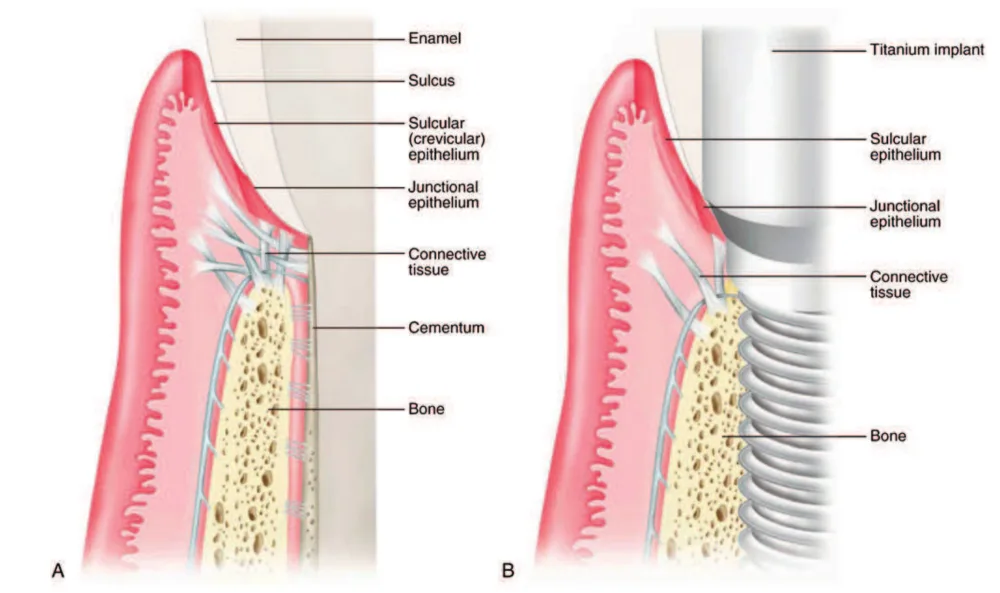
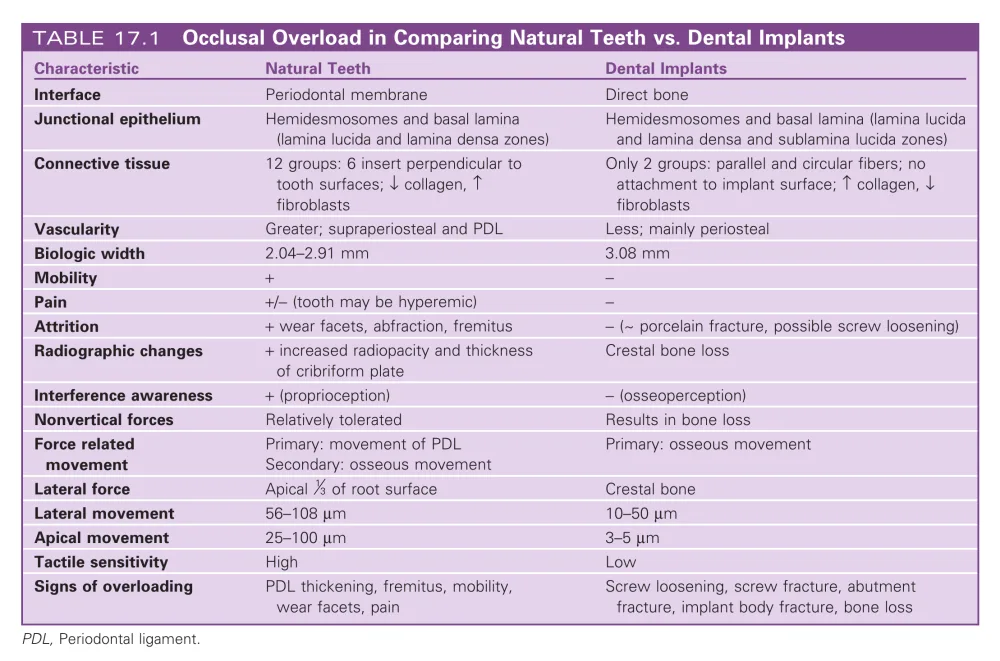

نسخه استخراجشده؛ ترجمه یا تأیید علمی انجام نشده است. وضعیت: captured
در یونیتهای پیش بارها گفتیم «دندان لیگامان پریودنتال دارد و ایمپلنت ندارد». این درس آن جمله را به عدد تبدیل میکند.
حرکت — و این مهمترین جفت عدد این یونیت است:
• حرکت جانبی: دندان طبیعی ۵۶ تا ۱۰۸ میکرومتر، ایمپلنت ۱۰ تا ۵۰ میکرومتر
• حرکت اپیکال: دندان طبیعی ۲۵ تا ۱۰۰ میکرومتر، ایمپلنت ۳ تا ۵ میکرومتر
به نسبت حرکت اپیکال دقت کن: تا بیست برابر تفاوت. و این یعنی وقتی ایمپلنت و دندان کنار هم بارگذاری میشوند، دندان فرو میرود و ایمپلنت نمیرود — پس ایمپلنت بار بیشتری میگیرد.
و مبدأ حرکت هم روشن است:
• دندان: حرکت اولیه از PDL، حرکت ثانویه از استخوان
• ایمپلنت: حرکت اولیه مستقیماً از استخوان
یعنی ایمپلنت مرحلهی جذب اولیه ندارد؛ از همان اولین لحظه، بار به استخوان میرسد.
محل تحمل نیروی جانبی — و این تفاوت حیاتی است:
• دندان: نیروی جانبی در یکسوم اپیکال سطح ریشه تحمل میشود
• ایمپلنت: در استخوان کرستال
دندان بار جانبی را به عمق میفرستد؛ ایمپلنت آن را در کرست نگه میدارد — همان ناحیهای که آسیبپذیرترین است. و این با یافتهی «تمرکز بار در ۷ تا ۹ میلیمتر کرستال» از یونیت پیش میخواند.
و پیامد مستقیمش: نیروهای غیرعمودی در دندان «نسبتاً تحمل میشوند» ولی در ایمپلنت «به تحلیل استخوان میانجامند».
عرض بیولوژیک: دندان ۲٫۰۴ تا ۲٫۹۱ میلیمتر، ایمپلنت ۳٫۰۸ میلیمتر — یعنی ایمپلنت به فضای عمودی بیشتری نیاز دارد.
و ساختار بافت همبند که ریشهی همهی این تفاوتهاست:
• دندان: ۱۲ گروه فیبر که ۶ گروهشان عمود بر سطح دندان وارد میشوند
• ایمپلنت: تنها ۲ گروه — موازی و دایرهای — بدون هیچ اتصالی به سطح ایمپلنت
«بدون هیچ اتصالی». فیبرها فقط دور ایمپلنت میچرخند؛ به آن نمیچسبند.

در یونیت پیش خواندی که «آگاهی اکلوزالی در پروتز ایمپلنت کاهش یافته». این بخش سازوکارش را توضیح میدهد.
دو اصطلاح را باید از هم جدا کرد:
• پروپریوسپشن (دندان): حس عمقی که از خودِ لیگامان پریودنتال میآید
• استئوپرسپشن (ایمپلنت): «اصطلاح استئوپرسپشن برای توصیف نوع متفاوتی از تحریک مکانیکی مختص ایمپلنتهای دندانی به کار رفته است.»
و تفاوت کلیدی در محل گیرندههاست: «این نوع حس با مکانورسپتورهای بافتهای اوروفاسیال مرتبط است — به احتمال زیاد در عضله، مفصل، مخاط و بافتهای پریوستئال.»
و: «مکانورسپتورهای مسئول استئوپرسپشن نشان داده شده که در فاصلهای از خودِ ایمپلنت قرار دارند و سیگنالهای حسی متفاوتی به بارهای استاتیک و دینامیک میفرستند.»
یعنی حس از خودِ ایمپلنت نمیآید؛ از اطرافش میآید. و همین توضیح میدهد چرا این حس کندتر و درشتتر است.
و عددی که مقیاس تفاوت را نشان میدهد:
«تشخیص نیروی استاتیک تقریباً ۱۰ برابر بیشتر برای بیماران با ایمپلنت در مقایسه با بیماران دنداندار است.»
ده برابر نیروی بیشتر لازم است تا بیمار متوجه شود. پس وقتی بیمار میگوید «مشکلی حس نمیکنم»، این اطلاعات نیست — سکوت یک حسگر کمحساس است.
و اما یک تعدیل مهم: «پروپریوسپشن مرتبط با ایمپلنتهای دندانی شبیه دندانهای طبیعی است که با بیحسی موضعی بلوکه شدهاند.» — یعنی ایمپلنت کاملاً بیحس نیست؛ بهاندازهی یک دندان بیحسشده حس دارد.
فیکساسیون رژید و حرکت واقعی:
تعریف بالینی: «فیکساسیون رژید اصطلاحی بالینی است که نبود تحرک بالینی ایمپلنت را هنگام آزمون با نیروهای عمودی یا افقی کمتر از ۵۰۰ گرم توصیف میکند.»
ولی بدان: «نبود حرکت قابل مشاهدهی بالینی بهمعنای نبود واقعی هرگونه حرکت نیست. یک ایمپلنت سالم کمتر از ۷۳ میکرومتر حرکت میکند؛ این بهصورت تحرک بالینی صفر ظاهر میشود.»
و تمایز اصطلاحی که باید بدانی: «استئواینتگریشن اصطلاحی هیستولوژیک است که تماس مستقیم استخوان با سطح ایمپلنت در بزرگنمایی میکروسکوپ نوری را تعریف میکند.» — و یک نکتهی دیگر: این دو اصطلاح در طول سالها بهجای هم به کار رفتهاند، ولی «نبود تحرک ایمپلنت همیشه با یک رابط مستقیم استخوانـایمپلنت همراستا نیست.»
و مهمترین بخش عملی این درس — نشانههای اضافهبار در دو دنیای متفاوت:
• دندان: ضخیم شدن PDL، فرمیتوس، تحرک، فاست سایش، درد
• ایمپلنت: شل شدن پیچ، شکست پیچ، شکست اباتمنت، شکست بدنهی ایمپلنت، تحلیل استخوان
تفاوت را ببین: دندانِ زیر اضافهبار لق و گاهی دردناک میشود و بیمار و دندانپزشک را خبردار میکند. ایمپلنت با تماس زودرس معمولاً بیعلامت و بدون لقی میماند، و نبود این بازخورد به تحلیل استخوان کرستال یا شکست مکانیکی میانجامد.
یعنی دندان هشدار میدهد و ایمپلنت میشکند. و همین است که کل منطق «اکلوژن محافظتشدهی ایمپلنت» را میسازد — موضوع درس بعد.
